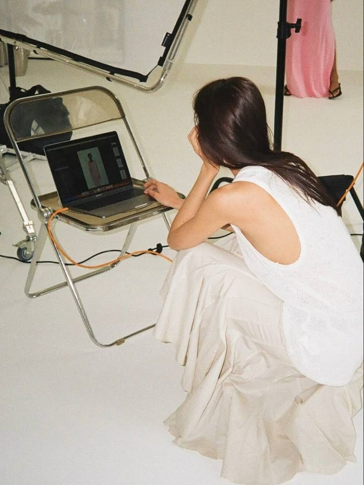
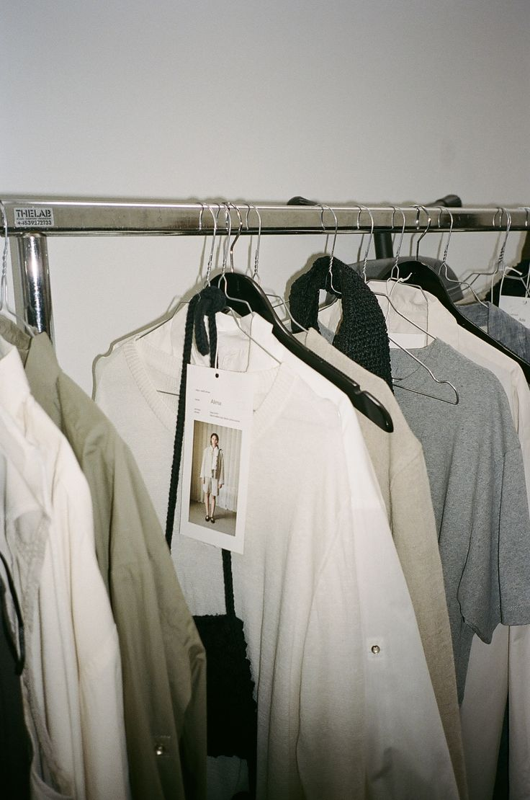
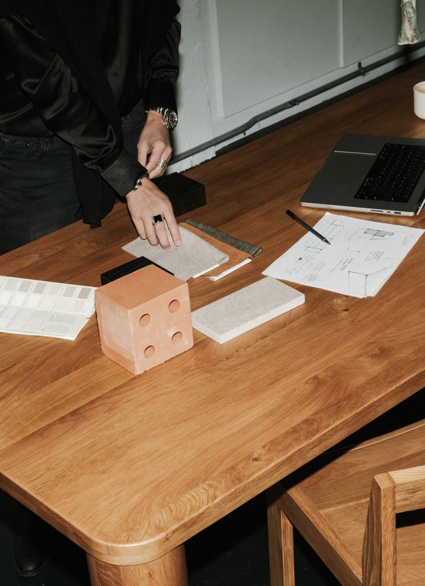
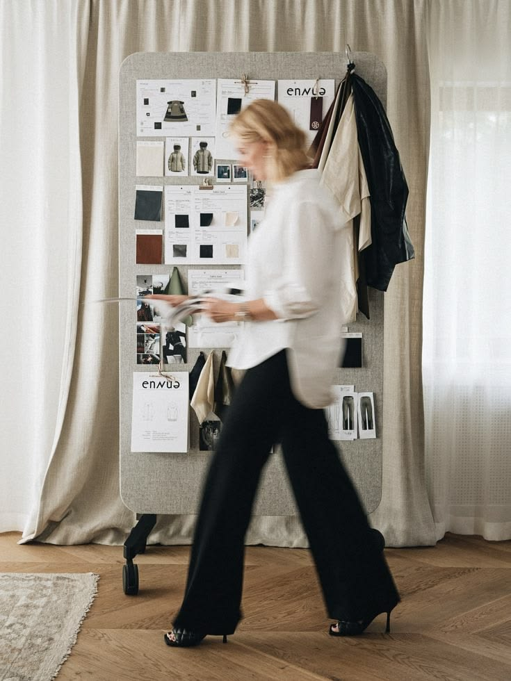

O planejamento é valioso.
Ter um passo a passo parece um princípio clichê, mas não é. Aqui na Jozzi, a organização vem desde entender o que você precisa até a entrega de resultados.
O lab de marketing que transforma a sua marca para o mundo real.
Mais que estética,
somos estratégia.
A Jozzi se diferencia por operar na autenticidade e no posicionamento real da marca. Uma equipe enxuta que busca caminhar lado a lado daquilo que você deseja transmitir.
Unimos branding, conteúdo, comunicação e styling com um só propósito: create for you.
Quatro princípios,
uma postura.
Ter um passo a passo parece um princípio clichê, mas não é. Aqui na Jozzi, a organização vem desde entender o que você precisa até a entrega de resultados.
Trabalhamos com uma imersão real na sua marca para que o seu diferencial seja a qualidade e não a quantidade. Ter presença é comunicar-se de forma autêntica.
Estamos sempre investigando tendências, aprendendo, explorando e se atualizando. A criatividade não vem do além, ela é construída.
Do processo criativo ao relacionamento com o público, valorizamos uma comunicação próxima que só o contato humano pode proporcionar.
Como criamos para você.

O nosso objetivo é que sua marca realmente seja marcante. Mapeamos, junto com você, a real mensagem que acompanhará cada criação.
Mais do que conteúdos bonitos esteticamente, priorizamos gerar posicionamento nas redes sociais a partir de uma avaliação de estratégias que funcionam para cada caso.

Construímos narrativas que vão para além da moda, comunicando a harmonia perfeita entre identidade visual, propósito e público-alvo.
Conectamos performance e estratégias com campanhas que respondem aos objetivos de alcance.

Essa é a ponte de início que liga o seu posicionamento com a conversão. Criamos e gerenciamos sites do zero para a sua marca, gerando também experiência.
Priorizamos um olhar estratégico em cada etapa que precede a publicação dos vídeos, para que cada take alcance o objetivo final.


De Curitiba para todo o Brasil.
Cada marca é singular.
Como o nosso próprio lema já diz, somos experts em criar para você. Como marketing lab, enxergamos que cada projeto requer profundidade e, por causa disso, somos pequenos, priorizando que a atenção ao detalhe seja personalizada. Com ênfase no mercado da moda, desenvolvemos processos criativos e comunicação do zero a partir de um diagnóstico do seu objetivo. Juntos, buscamos respostas para os resultados que você quer alcançar.
Pedir um orçamento pelo WhatsApp
Combine as frentes, veja o escopo que elas cobrem juntas e peça um orçamento feito para a sua marca.
Combo
Frentes
Traduzimos a essência de cada marca,
do detalhe ao resultado final.
O Collab Brechós chegou à Jozzi como um evento de moda circular premium que ainda precisava se posicionar nas redes sociais e atingir novos públicos.
Styling — Eventos
Saiba maisA Claudia Choma, nutricionista materno-infantil há mais de 33 anos e professora aposentada da Universidade Federal do Paraná, chegou à Jozzi com o objetivo de finalizar a sua carreira no consultório, tendo um posicionamento maior nas redes sociais.
A relação do direito com o mundo digital requer atenção e cuidado na construção da linguagem ideal.
A marca WIDEPINE chegou à Jozzi com uma identidade já preexistente e uma consolidação forte no mercado, mas tendo o desejo de ampliar a experiência do site.
A marca Shop Carol, consolidada como uma das melhores em Curitiba de curadoria secondhand premium, buscava um planejamento e criação de social media mais efetivo, além de um posicionamento de moda maior.

A primeira agência de marketing com foco em moda de Curitiba.
Jozzi nasceu com sonoridade de marca de moda — curta, fácil de lembrar, com o mesmo peso dos nomes que a gente reconhece de longe numa vitrine. Não é coincidência: tratamos cada cliente com o mesmo critério que uma boa grife trata uma coleção. Nada entra sem motivo, e o que fica carrega a assinatura de quem fez. Desde 2025, nos estabelecemos como uma agência de marketing com um objetivo que vai muito além do significado ao pé da letra. Através da conexão entre estratégias e criatividade, construímos projetos pensando exatamente no que o cliente quer, e não no que nós queremos. Acreditamos que autenticidade só existe quando há fidelidade ao propósito. Ao acumularmos uma gama de experiências com marcas no mercado da moda, nos posicionamos a partir da objetividade em cada etapa.
Fundadora e diretora criativa
Letícia Cruz é formada em Design de Moda pela Universidade Positivo (UP) e tem uma trajetória rica de experiências como stylist e produtora de moda. Ao passar a maior parte do tempo imersa na criação de campanhas, editoriais e conteúdos, Letícia sempre teve o desejo de unir o lado criativo com a entrega de estratégias para marcas em uma só direção. Foi assim que nasceu a Jozzi: o lugar que cria para você e com a maior qualidade possível dentro da sua proposta, buscando um olhar de 360 graus em cada etapa, para não sermos só mais uma agência. A mensagem principal de sua criação também carrega memória, porque Letícia passou metade de sua vida em Joanesburgo, na África do Sul, cidade dona do apelido carinhoso “Jozi”. Com uma conexão entre história e propósito, o seu pilar é que grandes marcas também são as que geram memória.
Cargo a definir
Biografia a definir — mesma extensão e mesmo tom da anterior. Este campo não foi preenchido por inferência.
Guilherme Bernardino
Função a definir
Giovanna Gobbi
Função a definir
Loize Antiacomi
Função a definir
Venha criar
com a gente.
Expectativa de resposta — a confirmar ©2026
Onde ficamos.